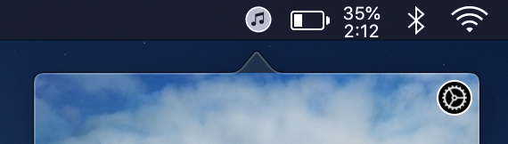

- Menu Bar Icon
You can now enable a Menu Bar icon in the app's preferences. Play around with it a little and find out what looks best for you.
- Support tab
A new Support tab can be found in the preferences for those who want to support Music Bar's development.